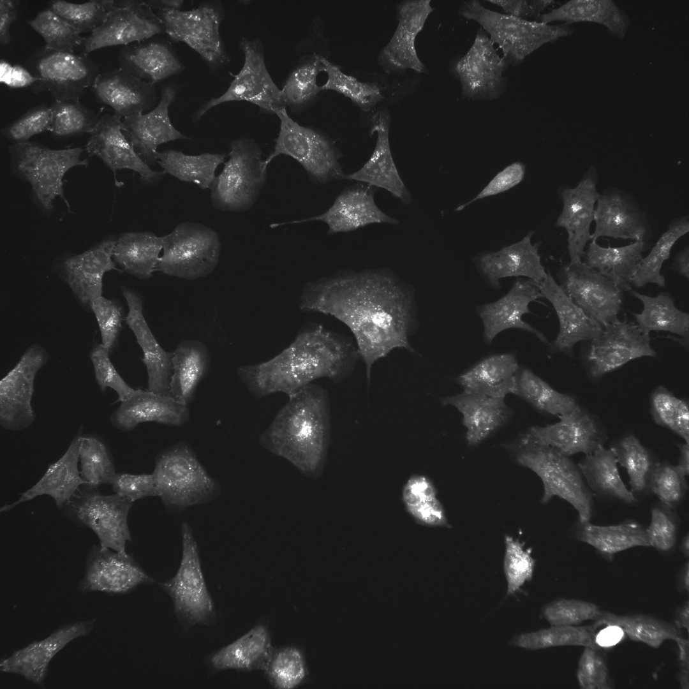
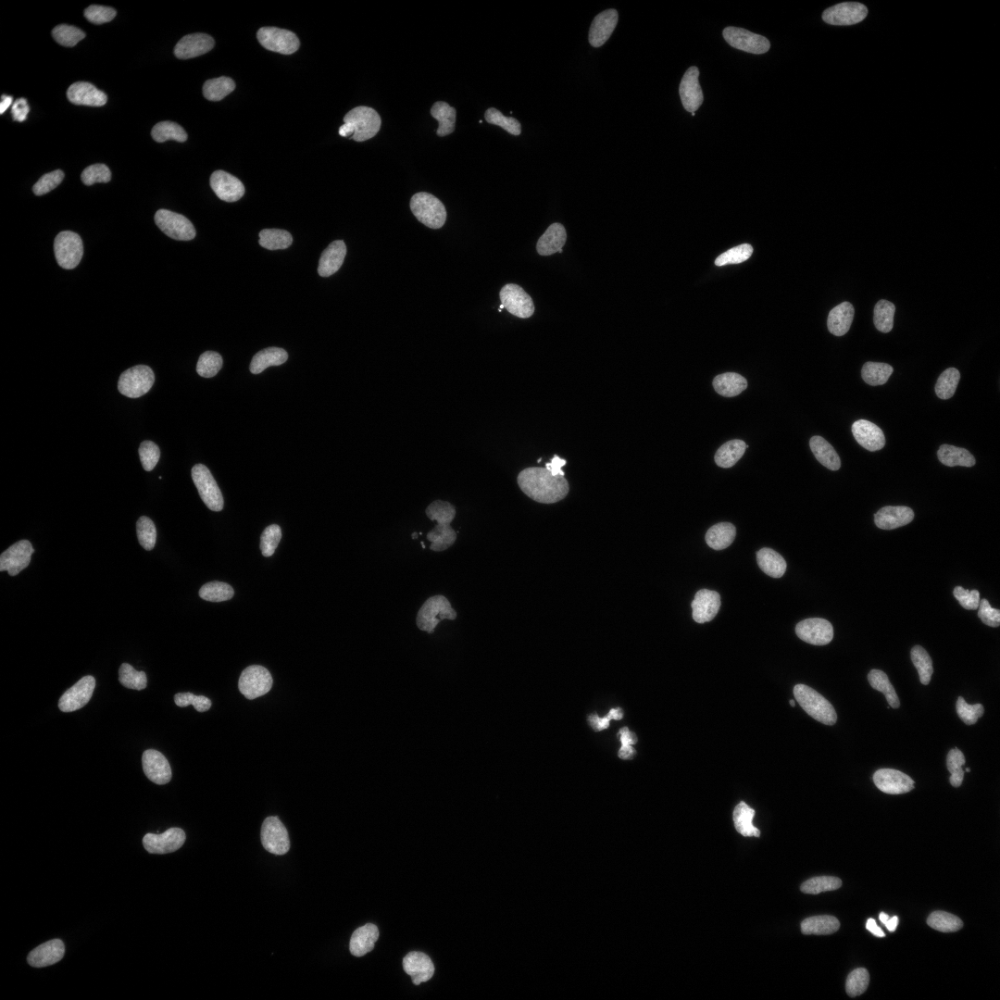
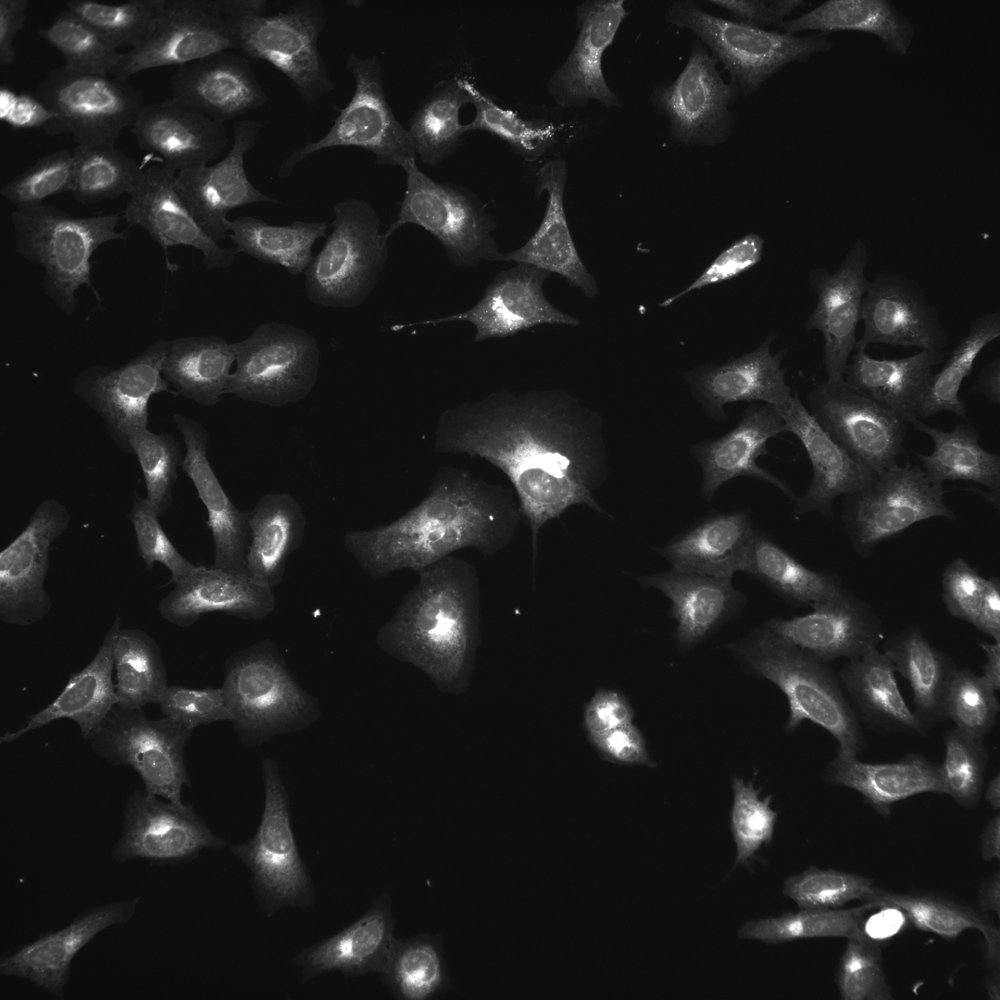
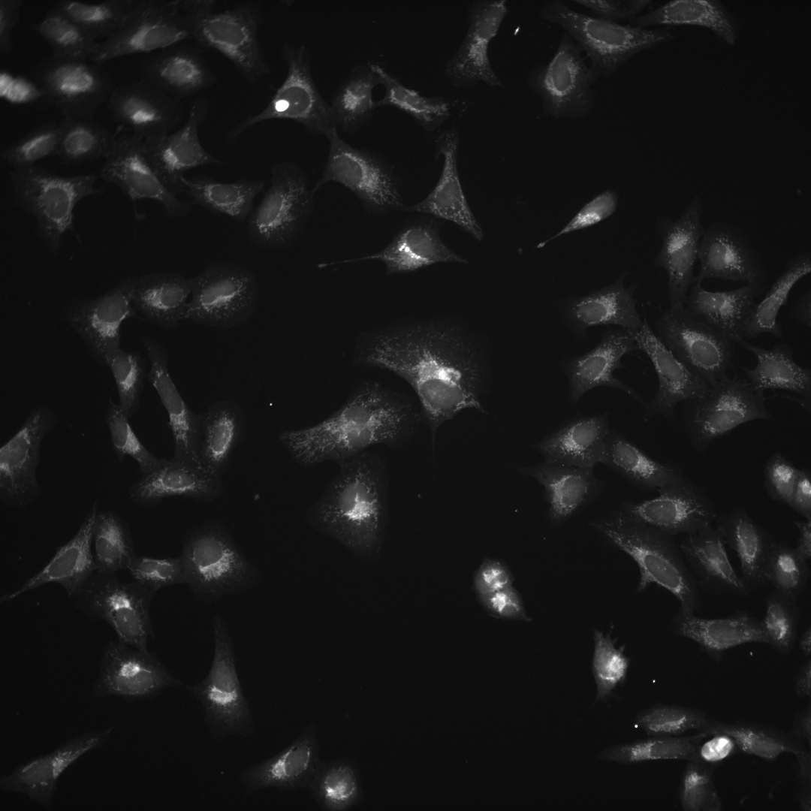

Broad Bioimage Benchmark Collection
Annotated biological image sets for testing and validation
Human U2OS cells - Gene overexpression profiling experiment
Accession number BBBC037 · Version 1
Example images
-

-

-

-

-
Description of the biological application
The image set can be used to functionally annotate the genes through comparing their overexpression morphological profiles.
Images
Images from five fluorescent channels were captured at 20x magnification on an ImageXpress Micro epifluorescent microscope (Molecular Devices). Nine sites per well were acquired, with laser based autofocus using the DAPI channel at the first site of each well. Each image channel was then stored as a separate, grayscale image file in 16-bit TIF format.
Ground truth B
Each gene is annotated with its biological pathway, generated by domain experts at our institution.
BBBC037_v1_DatasetGroundTruth.zip (150.9 MB)
Metadata
Description of columns:
- Metadata_broad_sample: Internal Broad ID of the ORF
- Metadata_moa: Pathway that the gene is involved in
- Gene Allele Name: Gene and allele symbols
Pathway annotations are generated by domain experts at the Broad Institute.
For more information
These images were contributed by Mark Bray. More information about this dataset can be found in the publication below (Rohban, 2017).
Published results using this image set
Rohban, Mohammad Hossein, Shantanu Singh, Xiaoyun Wu, Julia B. Berthet, Mark-Anthony Bray, Yashaswi Shrestha, Xaralabos Varelas, Jesse S. Boehm, and Anne E. Carpenter (2017). Systematic Morphological Profiling of Human Gene and Allele Function via Cell Painting. eLife 6 (March). 10.7554/eLife.24060. PMID: 28315521 PMCID: PMC5386591
Recommended citation
"We used image set BBBC037v1 Rohban et al. 2018, available from the Broad Bioimage Benchmark Collection [Ljosa et al., Nature Methods, 2012]."
Copyright
 These images are licensed under a
Creative Commons Attribution 3.0 Unported License
by Mohammad Rohban.
These images are licensed under a
Creative Commons Attribution 3.0 Unported License
by Mohammad Rohban.